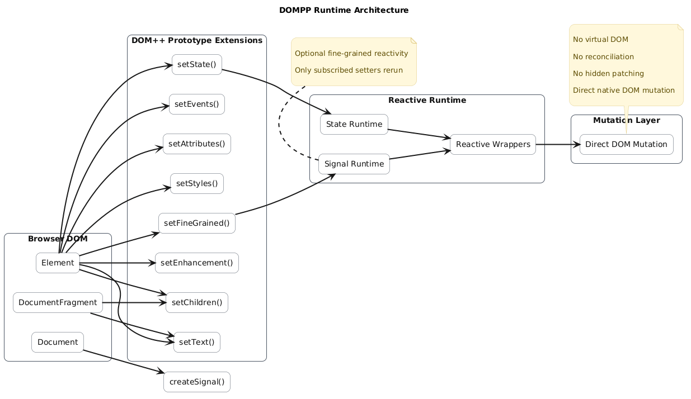
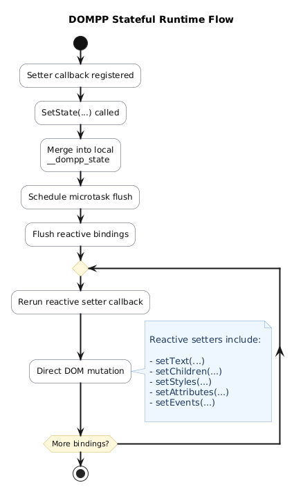
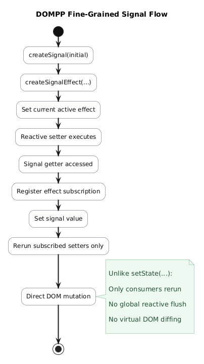
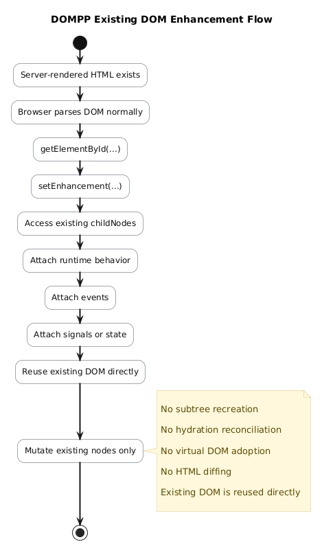
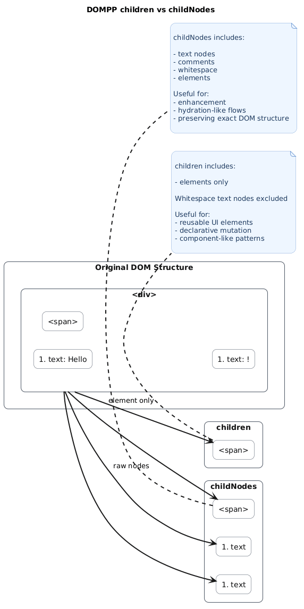
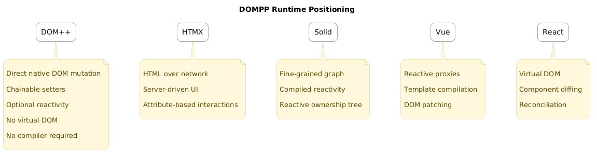
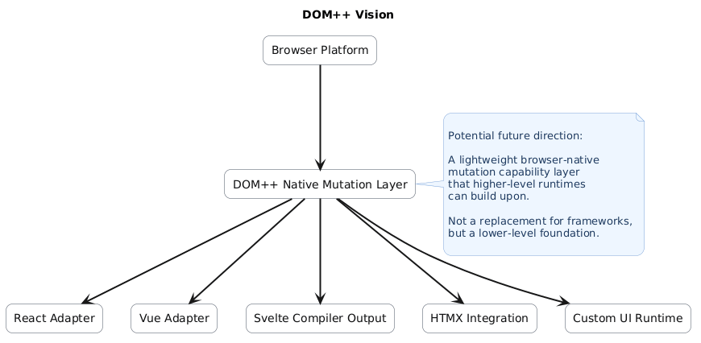

Runtime Flow
High-level overview of how setters, mutation callbacks, and DOM updates flow through the runtime.
Visual documentation describing how DOMPP performs deterministic mutation, optional reactivity, enhancement, and fine-grained signal updates directly on native DOM APIs.
DOMPP explores the idea that browser-native DOM mutation APIs can become expressive enough to support:
Instead of replacing the DOM, DOMPP attempts to extend it.
If browser-native mutation APIs became sufficiently ergonomic, frameworks and compilers could potentially build on top of this infrastructure rather than recreating their own rendering runtimes.
These diagrams explain the internal mental model, runtime flow, and architectural positioning of DOMPP.

High-level overview of how setters, mutation callbacks, and DOM updates flow through the runtime.

Explains how local element state reruns reactive setter callbacks after mutation.

Describes signal dependency tracking and direct setter subscriptions.

Demonstrates how DOMPP enhances existing DOM structures without subtree recreation.

Explains the behavioral difference between structural element reuse and exact DOM preservation.

Conceptual positioning of DOMPP relative to frameworks, rendering runtimes, and browser-native APIs.

Long-term conceptual vision for browser-native mutation infrastructure.